NiosII GCC examples on DE2
I used these examples to start teaching myself NiosII design. They are in the order I did them, rather than in a pedagogical order. The first example should only be used for background information and not used as a programming style.
Special Note: The component altpll has changed between release 7 and 8 of Quartus. When defining a PLL for the phase-shifted SDRAM clock c0 (as explained in the SDRAM tutorial), you need to add an c1 output to the PLL with zero phase-shift and use this signal for the NiosII clock! If you don't do this, the program will load normally, with no error messages, but the program will not run! A new, corrected project is zipped here.
- Hardware timer with interrupt
A.
Using raw memory address hacking . Each specific NiosII processor has different characteristics, so when talking about an GCC program, you also have to specifiy the specific NiosII that it runs on. The first GCC example uses the same economy cpu (E version) as describled in the first assembler example. I used this version because I did not want to deal with cache while hacking on memory. The program was compiled and downloaded using the NiosII Debug Client. This GCC program builds a timer ISR from scratch and uses it to blink some lights. In general, we will use a higher level interface to exceptions, but this example is entertaining because it gets down to the hardware. Some things to note:
- The style of this program is primitive. Memory is modified directly. In particular, after initialization, the init code is overwritten by the exception vector branch instruction . This is really bad practice and is not ROMable. In fact, the program won't even restart if reset! The only reason to code this way is if you want better ISR response time than is available through the standard library interfaces. This scheme is as fast as assembler, while the standard librarys take 100-400 cycles to get into an ISR. See Altera NiosII exception handling section on ISR performance. For all real projects in this class, use the style shown in part B below. Precise, high speed, software interrupt handling should be replaced by FPGA hardware whenever possible.
- The exception branch instruction is constructed brute force as
BR_exception = (((int)pISR - exception_addr - 4) << 6 ) + 0x06 ;
The offset formed by the (function entry)-exception_addr-4 is shifted in the correct bit position in the instruction, then the 0x06 opcode is added.
- All i/o addresses were taken directly from the SOPC builder GUI. Later examples will use an auto-generated library.
- The ISR is written completely in assembler, with no attempt to save context, because for this simple case we don't need to. The ISR just clears the necessary
TO bit, inverts a register, corrects the exception return address (ea), and leaves. The ea needs to be corrected because hardware and software exceptions are handled slightly differently. See processor manual.
- The IRQ bits in the
enable control register and the master PIE bit in the cpu status register have to be manipulated with direct assembler commands.
B. Using the HAL system library and NiosII IDE. This GCC example uses a economy cpu (E version) with an 8-bit input port (for switches), an 8-bit output port (for LEDs), a timer with interrupt, and 16k of on-chip RAM. The SOPC configuration is shown below and is complete in the sof and ptf files. The top level module is the same as above.
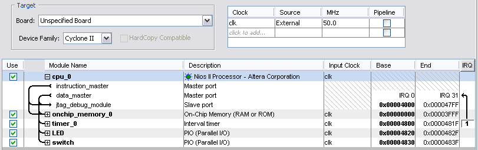
The GCC program was written, compiled and downloaded using the NiosII IDE. The enitre project is zipped here. Chapter 16 of Hamblen's book was very useful in learning to use the IDE. The IDE uses the ptf file to generate a system library for the specific processor you have just built using the SOPC builder and QuartusII. The system library can then be included in your GCC program. Some things to note:
- You must generate a system library for each processor you build. In example 1 above we needed to hardcode each peripheral address. Using the auto-generated library, we can use symbolic equivalents without hardcoding addresses.
- Each peripheral has a set of interface routines in
...syslib/DeviceDrivers[sopc_builder]/.
- The file
...syslib/debug/system_description/system.h has peripheral base addresses, IRQ definitions, and many cpu details.
- The style used in this example is called Direct Register Access by Altera. Each peripheral register is manipulated directly by macros given in the
DeviceDriver directories.
- The HAL API Reference shows how to use various higher level functions. In particular, there are a complete set of interrupt control functions.
- Registering an ISR with HAL automatically turns on the interrupt. You can change this behavior if necessary.
- This version of the code (and economy cpu) fails when the timer interval falls below about 400 cycles.
- Hardware timer and external DDS (running from SDRAM).
Special Note: The component altpll has changed between release 7 and 8 of Quartus. When defining a PLL for the phase-shifted SDRAM clock c0 (as explained in the SDRAM tutorial), you need to add an c1 output to the PLL with zero phase-shift and use this signal for the NiosII clock! If you don't do this, the program will load normally, with no error messages, but the program will not run!
This GCC example runs on a pipelined NiosII CPU (S version), running code from external 8 Mbyte SDRAM. The SOPC configuration is shown below and is complete in the sof and ptf files. Remember to add a PLL to the system to phase-shift the SDRAM clock.
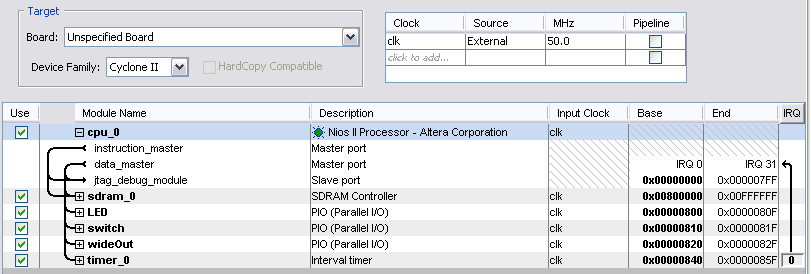
Circuitry in the top-level module implements DDS (direct digital synthesis) running at 50 MHz. Using DDS hardware external to the CPU makes the timing of the DDS independent of any interrupt variability, and makes the DDS clock rate faster than could be realized in software. The program reads switches 7:0 and blinks some LEDs at a rate determined by the hardware timer interrupt. The switch settings are scaled by the cpu to produce a convenient frequency range of 1 Hz per switch value. As an example, setting FF on the switches will result in 255.0 Hz at pins 7:0 of the JP1 (GPIO_0) connector. Monitoring pin 7 with a scope verifies the frequency accuracy. Programming was carried out using the NiosII IDE.
A minor change in the GCC program eliminates the global variable used to communicate between the timer ISR and main. Instead, a variable declared in main is shared with the ISR by means of the context pointer defined when the ISR is registered with the top-level exception handler. It is easy to think that this shared variable is a parameter passed to the ISR. But it is not! It changes asynchronously at any time in the main loop. The entire project is zipped here.
- Analog audio output from DDS.
Using the same cpu as in #2 above, but adding a bit more circuitry to the top-level module routes the DDS output sawtooth waveform to the red channel (pin 1) of the VGA plug. The VGA driver chip can act as a 50 MHz, 10-bit DAC for up to three audio channels, if it is not being used for video. The vga_blanking and vga_sync signals have to be set high to enable continuous DAC conversion.
Adding a ROM lookup sine table to the top-level module allows sinewave synthesis from the DDS circuitry. A matlab program generated the ROM table code. The GCC program was modified to produce a scale. A computer speaker or oscilloscope needs to be connected to pin 1 of the VGA connector. Suggestions for inferring ROM from Verilog code are given in the Altera HDL Coding Style manual. Adding another ROM lookup table with a 90 degree phase-shift in the address makes a simultaneous cosine wave on the VGA blue channel. The image below shows the two waveforms in quatrature. The output is about 600 mV peak-to-peak. Full scale output from the DAC is about 1.2 volts.
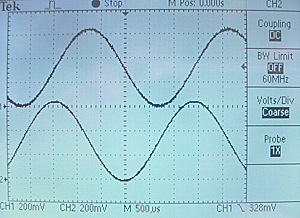
- Using the LCD.
Using the same cpu as in the MicroC/OS page, and making sure that the LCD hardware is turned on in the top-level Verilog module, we can use the LCD easily. The device driver for the LCD is named in system.h and seems to be recognized as a UNIX-style stream file device by the GCC library stdio.h. Using it is just a matter of opening a device using fopen and writing to it using fprintf. The device driver recognizes ansi escape codes to control the cursor position. This GCC program runs the DDS, as above, and adds LCD readout of the frequency.
- Two NiosII Processors with Hardware Mutex
As a first step in multiprocessing, I built two processors which share a hardware mutex to synchronize them. The GCC program running on each processor will count on the LEDs when it owns the mutex and stop when it does not. Switch SW15 causes processor 1 to get the mutex which holds it until SW15 is off and processor 2 gets the mutex by turning on SW0. The SOPC configuration is shown below, along with the memory maps of the reset and exception addresses. Each processor was configured as standard with 1kbyte of instruction cache.
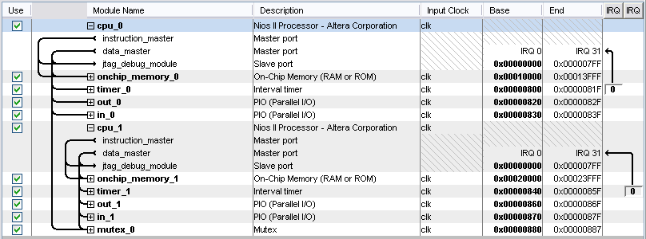
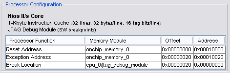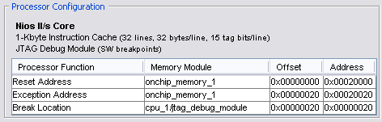
Top level module consists of one line which instantiates the two processors and connects i/o to both of them. A long comment (from the verilog file generated by SOPC) and the one line are shown below.
//From SOPC builder
/*
module TwoProc (
//global signals:
clk, reset_n,
// the_in_0
in_port_to_the_in_0,
// the_in_1
in_port_to_the_in_1,
// the_out_0
out_port_from_the_out_0,
// the_out_1
out_port_from_the_out_1
);
output [ 31: 0] out_port_from_the_out_0, out_port_from_the_out_1;
input clk, reset_n;
input [ 7: 0] in_port_to_the_in_0, in_port_to_the_in_1;
*/
//Build the two processors
TwoProc mytwo(CLOCK_50, KEY[0], SW[15:8], SW[7:0], LEDR, LEDG);
The two GCC programs were developed using the Altera multiprocessor tutorial as a guide. The Avalon mutex core description was also useful. The processor 1 program counts on the red LEDs when it owns the mutex. It gets the mutex if SW15 is on, and processor 2 does not own the mutex. The processor 2 program counts on the green LEDs when it owns the mutex. It gets the mutex if SW0 is on, and processor 1 does not own the mutex. Neither processor can get the mutex until the other releases it with the respective switch in the down position. The whole project is zipped here.
- Two NiosII Processors with Hardware Mutex and Hardware Mailbox
Two processors share a mutex and a mailbox for communication. The SOPC builder configuration is shown below. The mailbox requires a small associated memory which is configured in the dialog box shown when you click on the more mailbox settings tab in the SOPC.
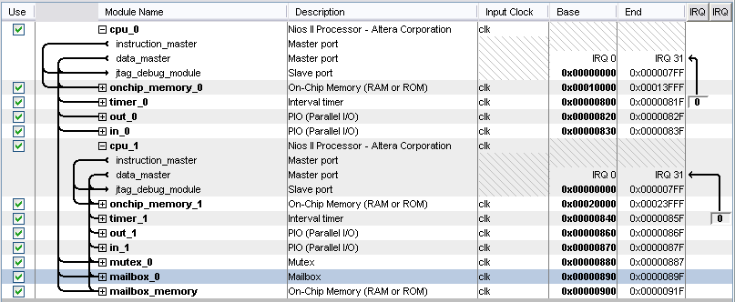
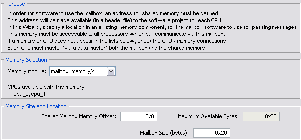
The two GCC programs were developed using the Altera multiprocessor tutorial as a guide. The Avalon mailbox core description was also useful. The processor 1 program counts on the red LEDs when it owns the mutex and sends a message to processor 2 on every clock tick. It gets the mutex if SW15 is on, and processor 2 does not own the mutex. The processor 2 program counts on the green LEDs when it owns the mutex and puts the count (message) from procesor 1on the green LEDS when it does not. It gets the mutex if SW0 is on, and processor 1 does not own the mutex. Note that if processor 1 owns the mutex, then SW15 is turned off while SW0 is off, that processor 2 will hang waiting for a message which never arrives. Neither processor can get the mutex until the other releases it with the respective switch in the down position. The whole project is zipped here.
- Two NiosII Processors running programs from SDRAM with Hardware Mutex and Hardware Mailbox
To run a program of any reasonable size (such as one including a printf) requires more memory than is available on-chip. Several processors can run out of SDRAM, as long as the reset and execption vectors for each are separated in SDRAM address space. You can set the vector positions in the more cpu Settings dialog boxes in the SOPC builder. In this example, each processor was given a MByte by placing the reset vectors at 1 MByte intervals in SDRAM. At 1 MByte each, you could support up to 8 processors with the existing SDRAM. The SOPC builder configuration and the two cpu dialog boxes are shown below. Each cpu was configured as standard, with 4kByte of instruction cache.
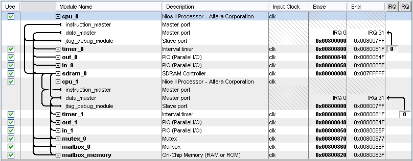
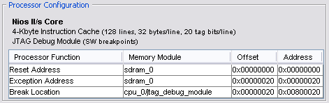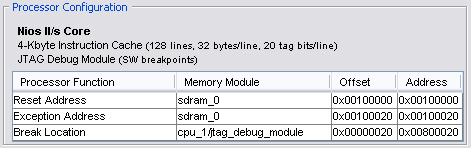
The top-level module needs to be changed to interface the to the extermal SDRAM, but the GCC programs do not need to be modified (from example 6 above) because the HAL layer hides the memory modification from the applications programs. The whole project is zipped here.
- Performance and optimization
A standard NiosII was defined with a timer and JTAG UART was used to experiment with processor performance. The computation was some variant on a simple loop with a few arithmetic operations in it, either inline or in a function.
References
JO Hamblen, TS Hall and MD Furman, Rapid protoyping of digital systems, Springer 2005
GNU GCC manual
GNU assembler manual
Altera NiosII instruction set reference
Altera NiosII exception handling
Altera Mutex example for use of LCD
Altera multiprocessor tutorial
Mutex Peripherical manual chapter 29
Mailbox Peripherial manual chapter 30
Avalon mailbox core
Avalon mutex core
Copyright Cornell University June 2006